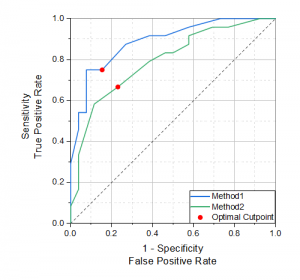

ROC曲線(OriginProのみ)
ROC-Curve
はじめに
受信者動作特性 (ROC) 曲線は、各カットオフでの偽陽性と真陽性との比率を表します。
模範的に、偽陽性の比率(1に指定)はX軸に、真陽性(敏感性)はY軸で表わされます。
- 
結果の解釈
ROC曲線は、診断テストが良いのか悪いのかを検討するのに使用されます。
2つの項目からROC曲線を判断することができます。
- 形状
- ROC曲線が左上角に向かって立ち上がっていると、偽陽性と偽陰性の割合が低いことを示しています。診断テストは良いと言うことができます。そして、悪い診断テストは、偽陽性率を低くするようなカットオフだけが高い偽陰性率を持つ場合や、その逆の場合です。ですので、もしROC曲線が左下角から右上角へ下がっている場合、診断テストは良くないと診断されるでしょう。
- 曲線以下の面積
- ROC曲線が左上角に向かって立ち上がっていると、曲線以下の面積が大きくなり、これが大きいほどより良い診断テストとなります。実際、診断テストはこれら2つの間のどこかに面積を持っています面積が1.0に近いほど、良いテストであり、面積が0.5に近いほど悪いテストとなります。
欠損値の扱い
データ範囲内の欠損値は、分析には含まれません。
グループ範囲内の欠損値と対応するデータ値は分析から除外されます。
ROC曲線解析を実行
ROC曲線解析を実行するには
- 統計：ROC曲線と選択します。「ROCCurve」ダイアログボックスが開きます。
- ダイアログで「入力データ」、「計算制御」を指定します。
- OKをクリックすると、分析レポートシートが作成されます。